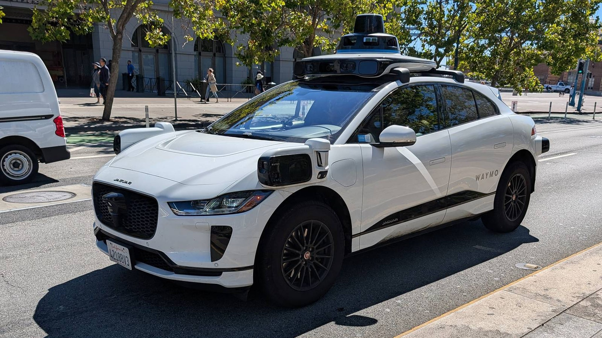

Waymo's Cars Crash 68% Less Than Humans. The Humans Inside Keep Getting Whiplash.

Somewhere in the marketing department, there is a slide that says 68 percent. An IIHS study published in August found Waymo's robotaxis crash 68 percent less often per mile than human drivers, and Waymo itself claims 16 times fewer serious-injury crashes across 217 million driverless miles.[5] Meanwhile, the humans paid to ride inside Waymo and Zoox test vehicles sustained more than two dozen injuries in 2024 and 2025, sprains and strains and whiplash and at least one cracked wrist, dealt out not by other drivers but by the cars themselves slamming on the brakes.[1] The robotaxi's greatest safety feature appears to be injuring its own occupants, which is the kind of sentence that makes you reread it to check for a typo. There is no typo.
Zoox contractors have a name for it: brake jabs. They happen multiple times on a single test drive, at any speed, often when the system detects, or merely thinks it detects, debris in the road. Scariest is the "nogo," internal code for a full system shutdown. "You could be going 45 miles per hour and the car will enact a nogo, and suddenly you're being whipped forward in the middle of the street, in traffic, and you need to be able to take over quickly," one contractor told TechCrunch.[1] Transdev, the company that staffs Waymo's test drivers, logged 16 injuries across depots in three cities from the software braking hard or swerving without warning. One Waymo car "suddenly backed up" while parking itself and whipped the steering wheel around, bending a driver's hand until he heard a crack in his wrist. He missed more than two months of work. A Phoenix driver spent 157 days away from work after an "exaggerated braking event without any obstruction." A Los Angeles driver spent 175 days away after the car stopped violently for "some kids playing in the pathway."[1] Read that last one again. It worked exactly as designed, and a man lost half a year of work to it.
This was supposed to be fixed already. In March 2025, Zoox recalled 258 vehicles for unexpected hard braking, closing out a year-long federal investigation into two rear-end collisions that injured motorcyclists. Per the filing, the defect was this: the software "reacted overcautiously and braked unnecessarily hard" for bicyclists near crosswalks, and "incorrectly anticipated a collision" with motorcycles approaching from behind.[3] Four of the eight Zoox worker injuries reported in 2025 happened after that recall.[1] Contractors say the brake jabs were still happening as recently as July 2026, and workers were still getting hurt. Zoox says the recall addressed an extremely narrow braking behavior and the later incidents are unrelated.[1] Perhaps. The word "narrow" is doing a great deal of heavy lifting in that sentence.
Now the part that should worry you more than the whiplash. OSHA knows about these injuries only because test drivers happen to be employees at depots with 100 or more workers, in industries the agency classifies as higher-hazard, which triggers public disclosure.[1][4] Zoox's purpose-built robotaxis, the ones with no steering wheel and no pedals, either run empty or carry passengers who are not employees. When one of those brake jabs injures a paying rider, no report goes to OSHA. It goes nowhere, unless the car also gets rear-ended hard enough to file with NHTSA, which has happened twice in the last eight months.[1] IIHS president David Harkey, commenting on the 68-percent study, warned that "the present data collection system isn't good enough to allow continuous monitoring of a large-scale expansion."[5] He meant crash rates. Injury surveillance is worse than that: its only sensor is the employee, and the entire business plan is to remove the employee.
What to do: if you ride in a robotaxi, wear the seatbelt, even in the back. That Zoox instructor who took a harsh brake jab to the ribs was a back-seat passenger.[1] Sit upright, keep your hands clear, and expect the car to brake violently for things you cannot see, including things that are not there. If you regulate any of this, the fix is boring and obvious: NHTSA's crash reporting should require occupant-injury disclosure for driverless operations, not just bent metal, and the 100-employee OSHA threshold means every new market operates in the dark until somebody files.[1][4] And if you quote the 68-percent figure at dinner parties, remember what it measures. Crashes per mile. Not brake jabs per mile, and not injuries per brake jab. Different denominators tell different stories, and the industry only publishes the flattering one.
What this does not prove: the OSHA data covers only large establishments in higher-hazard classifications, only 2024 and 2025, and 2026 figures will not be submitted until next year.[1] Testing miles are not public, so no honest per-mile injury rate can be computed, which means Zoox's "small percentage of millions of miles" cannot be checked by anyone outside the company.[1] Some workers were not certain their pain came from the car. Anonymous contractor accounts of injuries continuing into July 2026 cannot be independently verified. And FARS, the database this site is built on, has nothing to say here: it counts fatal crashes, and these are occupational injuries that never touch a police report. That silence is part of the story.
The strongest case against this story goes like this: two dozen strains across millions of test miles is a rounding error, and every one of those brake jabs is the machine choosing a bruised rib over a dead pedestrian. The Los Angeles driver spent 175 days away from work because the car stopped for children playing in its path, and the alternative to that stop was not a smoother ride but a coroner's van. Test drivers are professional guinea pigs in prototype vehicles, absorbing risk so the rest of us never have to, and the 68-percent crash reduction is real, measured, and enormous.[5] All of that is true. It is also true that the injury count is about to become unmeasurable, because the witnesses are being designed out of the vehicle. Both things are true at once. That is usually when you should pay the closest attention.
Sources & References
- Sean O'Kane, “Sprains, pain, and whiplash: Waymo and Zoox test drivers are getting hurt as robotaxis scale,” TechCrunch, August 27, 2026. techcrunch.com
- NHTSA, Recall 25E-029: Zoox ADS software, inaccurate perpendicular-vehicle prediction (270 vehicles), May 2025. static.nhtsa.gov
- David Shepardson, “Amazon's robotaxi unit Zoox agrees recall over braking issue,” Reuters, March 19, 2025. reuters.com
- OSHA, Injury Tracking Application: electronic submission of injury and illness data. osha.gov
- “Waymo robotaxis found to crash 68% less often than human drivers,” New York Post, August 3, 2026 (summarizing IIHS study). nypost.com
- NHTSA, Fatality Analysis Reporting System (FARS). nhtsa.gov
Source: Injury counts and worker accounts are TechCrunch's August 2026 review of OSHA Injury Tracking Application submissions; this article did not independently pull the ITA dataset. Recall figures from NHTSA filings; crash-rate figures from the IIHS study via secondary summary. See methodology for caveats.